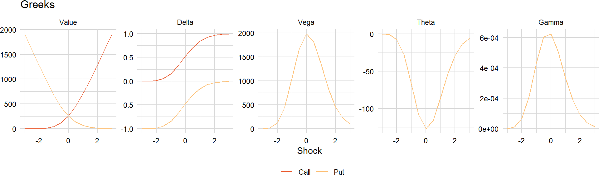
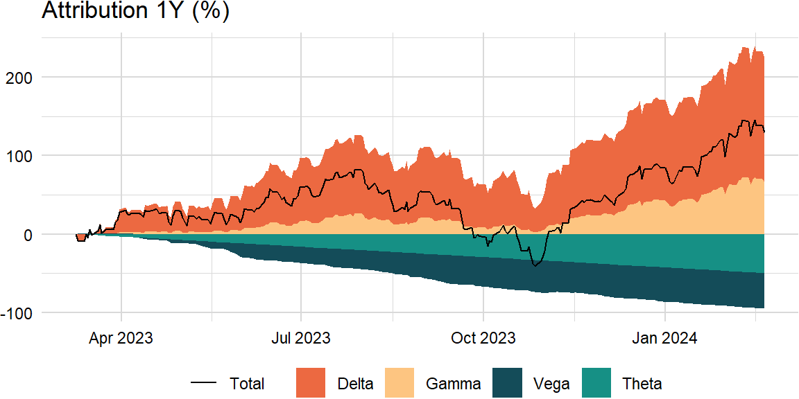

factors_r = ["SP500", "DTWEXAFEGS"] # "SP500" does not contain dividends; note: "DTWEXM" discontinued as of Jan 2020
factors_d = ["DGS10", "BAMLH0A0HYM2"]Black-Scholes model
def level_shock(shock, S, tau, sigma):
result = S * (1 + shock * sigma * np.sqrt(tau))
return result- https://en.wikipedia.org/wiki/Greeks_(finance)
- https://www.wolframalpha.com/input/?i=option+pricing+formula
factor = "SP500"
types = ["call", "put"]
S = levels_df.ffill()[factor].iloc[-1]
K = S
r = 0 # use "USD3MTD156N"
q = 0 # see https://stackoverflow.com/a/11286679
tau = 1 # = 252 / 252
sigma = sd_df[factor].iloc[-1] # use "VIXCLS"
shocks = [x / 2 for x in range(-6, 7)]greeks_df = pd.DataFrame([(x, y) for x in types for y in shocks],
columns = ["type", "shock"])
greeks_df["spot"] = level_shock(greeks_df["shock"], S, tau, sigma)Value
For a given spot price \(S\), strike price \(K\), risk-free rate \(r\), annual dividend yield \(q\), time-to-maturity \(\tau = T - t\), and volatility \(\sigma\):
\[ \begin{aligned} V_{c}&=Se^{-q\tau}\Phi(d_{1})-e^{-r\tau}K\Phi(d_{2}) \\ V_{p}&=e^{-r\tau}K\Phi(-d_{2})-Se^{-q\tau}\Phi(-d_{1}) \end{aligned} \]
def bs_value(type, S, K, r, q, tau, sigma, d1, d2):
if (type == "call"):
result = S * np.exp(-q * tau) * Phi(d1) - np.exp(-r * tau) * K * Phi(d2)
elif (type == "put"):
result = np.exp(-r * tau) * K * Phi(-d2) - S * np.exp(-q * tau) * Phi(-d1)
return resultdef bs_value(type, S, K, r, q, tau, sigma, d1, d2):
r_df = np.exp(-r * tau)
q_df = np.exp(-q * tau)
call_value = S * q_df * Phi(d1) - r_df * K * Phi(d2)
put_value = r_df * K * Phi(-d2) - S * q_df * Phi(-d1)
result = np.where(type == "call", call_value, put_value)
return resultwhere
\[ \begin{aligned} d_{1}&={\frac{\ln(S/K)+(r-q+\sigma^{2}/2)\tau}{\sigma{\sqrt{\tau}}}} \\ d_{2}&={\frac{\ln(S/K)+(r-q-\sigma^{2}/2)\tau}{\sigma{\sqrt{\tau}}}}=d_{1}-\sigma{\sqrt{\tau}} \\ \phi(x)&={\frac{e^{-{\frac {x^{2}}{2}}}}{\sqrt{2\pi}}} \\ \Phi(x)&={\frac{1}{\sqrt{2\pi}}}\int_{-\infty}^{x}e^{-{\frac{y^{2}}{2}}}dy=1-{\frac{1}{\sqrt{2\pi}}}\int_{x}^{\infty}e^{-{\frac{y^{2}}{2}}dy} \end{aligned} \]
def bs_d1(S, K, r, q, tau, sigma):
result = (np.log(S / K) + (r - q + sigma ** 2 / 2) * tau) / (sigma * np.sqrt(tau))
return result
def bs_d2(S, K, r, q, tau, sigma):
result = (np.log(S / K) + (r - q - sigma ** 2 / 2) * tau) / (sigma * np.sqrt(tau))
return result
def phi(x):
result = norm.pdf(x)
return result
def Phi(x):
result = norm.cdf(x)
return resultgreeks_df["d1"] = bs_d1(greeks_df["spot"], K, r, q, tau, sigma)
greeks_df["d2"] = bs_d2(greeks_df["spot"], K, r, q, tau, sigma)
greeks_df["value"] = bs_value(greeks_df["type"], greeks_df["spot"], K, r, q, tau, sigma,
greeks_df["d1"], greeks_df["d2"]) First-order
Delta
\[ \begin{aligned} \Delta_{c}&={\frac{\partial V_{c}}{\partial S}}=e^{-q\tau}\Phi(d_{1}) \\ \Delta_{p}&={\frac{\partial V_{p}}{\partial S}}=-e^{-q\tau}\Phi(-d_{1}) \end{aligned} \]
def bs_delta(type, S, K, r, q, tau, sigma, d1, d2):
q_df = np.exp(-q * tau)
call_value = q_df * Phi(d1)
put_value = -q_df * Phi(-d1)
result = np.where(type == "call", call_value, put_value)
return resultgreeks_df["delta"] = bs_delta(greeks_df["type"], greeks_df["spot"], K, r, q, tau, sigma,
greeks_df["d1"], greeks_df["d2"]) Delta-beta
Notional market value is the market value of a leveraged position:
\[ \begin{aligned} \text{Equity options }=&\,\#\text{ contracts}\times\text{multiple}\times\text{spot price}\\ \text{Delta-adjusted }=&\,\#\text{ contracts}\times\text{multiple}\times\text{spot price}\times\text{delta} \end{aligned} \]
def bs_delta_diff(type, S, K, r, q, tau, sigma, delta0):
d1 = bs_d1(S, K, r, q, tau, sigma)
d2 = bs_d2(S, K, r, q, tau, sigma)
delta = bs_delta(type, S, K, r, q, tau, sigma, d1, d2)
call_value = delta - delta0
put_value = delta0 - delta
result = np.where(type == "call", call_value, put_value)
return resultbeta = 0.35
type = "call"
n = 1
multiple = 100
total = 1000000d1 = bs_d1(S, K, r, q, tau, sigma)
d2 = bs_d2(S, K, r, q, tau, sigma)
sec = {
"n": n,
"multiple": multiple,
"S": S,
"delta": bs_delta(type, S, K, r, q, tau, sigma, d1, d2),
"beta": 1
}beta_df = pd.DataFrame([(x, y) for x in types for y in shocks],
columns = ["type", "shock"])
beta_df["spot"] = level_shock(beta_df["shock"], S, tau, sigma)
beta_df["static"] = beta
beta_df["diff"] = bs_delta_diff(type, beta_df["spot"], K, r, q, tau, sigma, sec["delta"])
beta_df["dynamic"] = beta + sec["n"] * sec["multiple"] * sec["S"] * sec["beta"] * beta_df["diff"] / totalFor completeness, duration equivalent is defined as:
\[ \begin{aligned} \text{10-year equivalent }=\,&\frac{\text{security duration}}{\text{10-year OTR duration}} \end{aligned} \]
Vega
\[ \begin{aligned} \nu_{c,p}&={\frac{\partial V_{c,p}}{\partial\sigma}}=Se^{-q\tau}\phi(d_{1}){\sqrt{\tau}}=Ke^{-r\tau}\phi(d_{2}){\sqrt{\tau}} \end{aligned} \]
def bs_vega(type, S, K, r, q, tau, sigma, d1, d2):
q_df = np.exp(-q * tau)
result = S * q_df * phi(d1) * np.sqrt(tau)
return resultgreeks_df["vega"] = bs_vega(greeks_df["type"], greeks_df["spot"], K, r, q, tau, sigma,
greeks_df["d1"], greeks_df["d2"]) Theta
\[ \begin{aligned} \Theta_{c}&=-{\frac{\partial V_{c}}{\partial \tau}}=-e^{-q\tau}{\frac{S\phi(d_{1})\sigma}{2{\sqrt{\tau}}}}-rKe^{-r\tau}\Phi(d_{2})+qSe^{-q\tau}\Phi(d_{1}) \\ \Theta_{p}&=-{\frac{\partial V_{p}}{\partial \tau}}=-e^{-q\tau}{\frac{S\phi(d_{1})\sigma}{2{\sqrt{\tau}}}}+rKe^{-r\tau}\Phi(-d_{2})-qSe^{-q\tau}\Phi(-d_{1}) \end{aligned} \]
def bs_theta(type, S, K, r, q, tau, sigma, d1, d2):
r_df = np.exp(-r * tau)
q_df = np.exp(-q * tau)
call_value = -q_df * S * phi(d1) * sigma / (2 * np.sqrt(tau)) - \
r * K * r_df * Phi(d2) + q * S * q_df * Phi(d1)
put_value = -q_df * S * phi(d1) * sigma / (2 * np.sqrt(tau)) + \
r * K * r_df * Phi(-d2) - q * S * q_df * Phi(-d1)
result = np.where(type == "call", call_value, put_value)
return resultgreeks_df["theta"] = bs_theta(greeks_df["type"], greeks_df["spot"], K, r, q, tau, sigma,
greeks_df["d1"], greeks_df["d2"]) Second-order
Gamma
\[ \begin{aligned} \Gamma_{c,p}&={\frac{\partial\Delta_{c,p}}{\partial S}}={\frac{\partial^{2}V_{c,p}}{\partial S^{2}}}=e^{-q\tau}{\frac{\phi(d_{1})}{S\sigma{\sqrt{\tau}}}}=Ke^{-r\tau}{\frac{\phi(d_{2})}{S^{2}\sigma{\sqrt{\tau}}}} \end{aligned} \]
def bs_gamma(type, S, K, r, q, tau, sigma, d1, d2):
q_df = np.exp(-q * tau)
result = q_df * phi(d1) / (S * sigma * np.sqrt(tau))
return resultgreeks_df["gamma"] = bs_gamma(greeks_df["type"], greeks_df["spot"], K, r, q, tau, sigma,
greeks_df["d1"], greeks_df["d2"]) 
Taylor series
First-order
Price-yield formula
For a function of one variable, \(f(x)\), the Taylor series formula is:
\[ \begin{aligned} f(x+\Delta x)&=f(x)+{\frac{f'(x)}{1!}}\Delta x+{\frac{f''(x)}{2!}}(\Delta x)^{2}+{\frac{f^{(3)}(x)}{3!}}(\Delta x)^{3}+\cdots+{\frac{f^{(n)}(x)}{n!}}(\Delta x)^{n}+\cdots\\ f(x+\Delta x)-f(x)&={\frac{f'(x)}{1!}}\Delta x+{\frac{f''(x)}{2!}}(\Delta x)^{2}+{\frac{f^{(3)}(x)}{3!}}(\Delta x)^{3}+\cdots+{\frac{f^{(n)}(x)}{n!}}(\Delta x)^{n}+\cdots \end{aligned} \]
Using the price-yield formula, the estimated percentage change in price for a change in yield is:
\[ \begin{aligned} P(y+\Delta y)-P(y)&\approx{\frac{P'(y)}{1!}}\Delta y+{\frac{P''(y)}{2!}}(\Delta y)^{2}\\ &\approx -D\Delta y +{\frac{C}{2!}}(\Delta y)^{2} \end{aligned} \]
Because of market conventions, use the following formula: \(P(y+\Delta y)-P(y)\approx -D\Delta y +{\frac{C\times 100}{2!}}(\Delta y)^{2}\)
def pnl_bond(duration, convexity, dy):
duration_pnl = -duration * dy
convexity_pnl = (convexity * 100 / 2) * dy ** 2
income_pnl = dy
result = pd.DataFrame({
"total": duration_pnl + convexity_pnl + income_pnl,
"duration": duration_pnl,
"convexity": convexity_pnl,
"income": income_pnl
})
return result- https://engineering.nyu.edu/sites/default/files/2021-07/CarWuRF2021.pdf
- https://onlinelibrary.wiley.com/doi/pdf/10.1002/9781118267967.app1
- https://www.investopedia.com/terms/c/convexity-adjustment.asp
factor = "DGS10"
duration = 6.5
convexity = 0.65
y = levels_df.ffill()[factor].iloc[-width]bond_df = pd.DataFrame({
"duration": duration,
"convexity": convexity,
"dy": (levels_df.ffill()[factor].iloc[-width:] - y) / 100
})attrib_df = pnl_bond(bond_df["duration"], bond_df["convexity"], bond_df["dy"])
Duration-yield formula
The derivative of duration with respect to interest rates gives:
\[ \begin{aligned} \text{Drift}&=-\frac{\partial D}{\partial y}\\ &=\frac{1}{P}\frac{\partial^{2}P}{\partial y^{2}}-\frac{1}{P^{2}}\frac{\partial P}{\partial y}\frac{\partial P}{\partial y}\\ &=C-D^{2} \end{aligned} \]
Because of market conventions, use the following formula: \(\text{Drift}=\frac{1}{100}\left(C\times 100-D^{2}\right)=C-\frac{D^{2}}{100}\)
def yield_shock(shock, tau, sigma):
result = shock * sigma * np.sqrt(tau)
return resultdef duration_drift(duration, convexity, dy):
drift = convexity - duration ** 2 / 100
change = -drift * dy * 100
result = {
"drift": drift,
"change": change
}
return result# "Risk Management: Approaches for Fixed Income Markets" (page 45)
factor = "DGS10"
sigma = sd_df[factor].iloc[-1]duration_df = pd.DataFrame(shocks).rename(columns = {0: "shock"})
duration_df["spot"] = yield_shock(duration_df["shock"], tau, sigma)
duration_df["static"] = duration
duration_df["dynamic"] = duration + \
duration_drift(duration, convexity, duration_df["spot"])["change"]Second-order
Black’s formula
A similar formula holds for functions of several variables \(f(x_{1},\ldots,x_{n})\). This is usually written as:
\[ \begin{aligned} f(x_{1}+\Delta x_{1},\ldots,x_{n}+\Delta x_{n})&=f(x_{1},\ldots, x_{n})+ \sum _{j=1}^{n}{\frac{\partial f(x_{1},\ldots,x_{n})}{\partial x_{j}}}(\Delta x_{j})\\ &+{\frac {1}{2!}}\sum_{j=1}^{n}\sum_{k=1}^{n}{\frac{\partial^{2}f(x_{1},\ldots,x_{d})}{\partial x_{j}\partial x_{k}}}(\Delta x_{j})(\Delta x_{k})+\cdots \end{aligned} \]
Using Black’s formula, the estimated change of an option price is:
\[ \begin{aligned} V(S+\Delta S,\sigma+\Delta\sigma,t+\Delta t)-V(S,\sigma,t)&\approx{\frac{\partial V}{\partial S}}\Delta S+{\frac{1}{2!}}{\frac{\partial^{2}V}{\partial S^{2}}}(\Delta S)^{2}+{\frac{\partial V}{\partial \sigma}}\Delta\sigma+{\frac{\partial V}{\partial t}}\Delta t\\ &\approx \Delta_{c,p}\Delta S+{\frac{1}{2!}}\Gamma_{c,p}(\Delta S)^{2}+\nu_{c,p}\Delta\sigma+\Theta_{c,p}\Delta t \end{aligned} \]
def pnl_option(type, S, K, r, q, tau, sigma, dS, dt, dsigma):
d1 = bs_d1(S, K, r, q, tau, sigma)
d2 = bs_d2(S, K, r, q, tau, sigma)
value = bs_value(type, S, K, r, q, tau, sigma, d1, d2)
delta = bs_delta(type, S, K, r, q, tau, sigma, d1, d2)
vega = bs_vega(type, S, K, r, q, tau, sigma, d1, d2)
theta = bs_theta(type, S, K, r, q, tau, sigma, d1, d2)
gamma = bs_gamma(type, S, K, r, q, tau, sigma, d1, d2)
delta_pnl = delta * dS / value
gamma_pnl = gamma / 2 * dS ** 2 / value
vega_pnl = vega * dsigma / value
theta_pnl = theta * dt / value
result = pd.DataFrame({
"total": delta_pnl + gamma_pnl + vega_pnl + theta_pnl,
"delta": delta_pnl,
"gamma": gamma_pnl,
"vega": vega_pnl,
"theta": theta_pnl
})
return resultfactor = "SP500"
type = "call"
S = levels_df.ffill()[factor].iloc[-width]
K = S # * (1 + 0.05)
tau = 1 # = 252 / 252
sigma = sd_df[factor].iloc[-width]options_df = pd.DataFrame({
"spot": levels_df.ffill()[factor].iloc[-width:],
"sigma": sd_df[factor].iloc[-width:]
})
options_df["dS"] = options_df["spot"] - S
options_df["dt_diff"] = (options_df.index - options_df.index[0]).days
options_df["dt"] = options_df["dt_diff"] / options_df["dt_diff"].iloc[-1]
options_df["dsigma"] = options_df["sigma"] - sigmaattrib_df = pnl_option(type, S, K, r, q, tau, sigma,
options_df["dS"], options_df["dt"], options_df["dsigma"])
Ito’s lemma
For a given diffiusion \(X(t, w)\) driven by:
\[ \begin{aligned} dX_{t}&=\mu_{t}dt+\sigma_{t}dB_{t} \end{aligned} \]
Then proceed with the Taylor series for a function of two variables \(f(t,x)\):
\[ \begin{aligned} df&={\frac{\partial f}{\partial t}}dt+{\frac{\partial f}{\partial x}}dx+{\frac{1}{2}}{\frac{\partial^{2}f}{\partial x^{2}}}dx^{2}\\ &={\frac{\partial f}{\partial t}}dt+{\frac{\partial f}{\partial x}}(\mu_{t}dt+\sigma_{t}dB_{t})+{\frac{1}{2}}{\frac{\partial^{2}f}{\partial x^{2}}}\left(\mu_{t}^{2}dt^{2}+2\mu_{t}\sigma _{t}dtdB_{t}+\sigma_{t}^{2}dB_{t}^{2}\right)\\ &=\left({\frac{\partial f}{\partial t}}+\mu_{t}{\frac{\partial f}{\partial x}}+{\frac{\sigma _{t}^{2}}{2}}{\frac{\partial ^{2}f}{\partial x^{2}}}\right)dt+\sigma_{t}{\frac{\partial f}{\partial x}}dB_{t} \end{aligned} \]
Note: set the \(dt^{2}\) and \(dtdB_{t}\) terms to zero and substitute \(dt\) for \(dB^{2}\).
Geometric Brownian motion
The most common application of Ito’s lemma in finance is to start with the percent change of an asset:
\[ \begin{aligned} \frac{dS}{S}&=\mu_{t}dt+\sigma_{t}dB_{t} \end{aligned} \]
Then apply Ito’s lemma with \(f(S)=log(S)\):
\[ \begin{aligned} d\log(S)&=f^{\prime}(S)dS+{\frac{1}{2}}f^{\prime\prime}(S)S^{2}\sigma^{2}dt\\ &={\frac {1}{S}}\left(\sigma SdB+\mu Sdt\right)-{\frac{1}{2}}\sigma^{2}dt\\ &=\sigma dB+\left(\mu-{\tfrac{\sigma^{2}}{2}}\right)dt \end{aligned} \]
It follows that:
\[ \begin{aligned} \log(S_{t})-\log(S_{0})=\sigma dB+\left(\mu-{\tfrac{\sigma^{2}}{2}}\right)dt \end{aligned} \]
Exponentiating gives the expression for \(S\):
\[ \begin{aligned} S_{t}=S_{0}\exp\left(\sigma B_{t}+\left(\mu-{\tfrac{\sigma^{2}}{2}}\right)t\right) \end{aligned} \]
This provides a recursive procedure for simulating values of \(S\) at \(t_{0}<t_{1}<\cdots<t_{n}\):
\[ \begin{aligned} S(t_{i+1})&=S(t_{i})\exp\left(\sigma\sqrt{t_{i+1}-t_{i}}Z_{i+1}+\left[\mu-{\tfrac{\sigma^{2}}{2}}\right]\left(t_{i+1}-t_{i}\right)\right) \end{aligned} \]
where \(Z_{1},Z_{2},\ldots,Z_{n}\) are independent standard normals.
def sim_gbm(n_sim, S, mu, sigma, dt):
result = S * np.exp(np.cumsum(sigma * np.sqrt(dt) * np.random.normal(size = n_sim)) + \
(mu - 0.5 * sigma ** 2) * dt)
return resultThis leads to an algorithm for simulating a multidimensional geometric Brownian motion:
\[ \begin{aligned} S_{k}(t_{i+1})&=S_{k}(t_{i})\exp\left(\sqrt{t_{i+1}-t_{i}}\sum_{j=1}^{d}{A_{kj}Z_{i+1,j}}+\left[\mu_{k}-{\tfrac{\sigma_{k}^{2}}{2}}\right]\left(t_{i+1}-t_{i}\right)\right) \end{aligned} \]
where \(A\) is the Cholesky factor of \(\Sigma\), i.e. \(A\) is any matrix for which \(AA^\mathrm{T}=\Sigma\).
def sim_multi_gbm(n_sim, S, mu, sigma, dt):
n_cols = sigma.shape[1]
Z = np.random.normal(size = n_sim * n_cols).reshape((n_sim, n_cols))
X = np.sqrt(dt) * Z @ np.linalg.cholesky(sigma).T + (mu - 0.5 * np.diag(sigma)) * dt
result = S * np.exp(X.cumsum(axis = 0))
return np.asmatrix(result)- https://arxiv.org/pdf/0812.4210.pdf
- https://quant.stackexchange.com/questions/15219/calibration-of-a-gbm-what-should-dt-be
- https://stackoverflow.com/questions/36463227/geometrical-brownian-motion-simulation-in-r
- https://quant.stackexchange.com/questions/25219/simulate-correlated-geometric-brownian-motion-in-the-r-programming-language
- https://quant.stackexchange.com/questions/35194/estimating-the-historical-drift-and-volatility/
S = [1] * len(factors)
sigma = np.cov(returns_df["returns"].dropna().T, ddof = 1) * scale["periods"]
mu = np.array(returns_df["returns"].dropna().mean()) * scale["periods"]
mu = mu + np.diag(sigma) / 2 # drift
dt = 1 / scale["periods"]mu_ls = []
sigma_ls = []for i in range(10000): # "TypeError: 'float' object cannot be interpreted as an integer"
# assumes underlying stock price follows geometric Brownian motion with constant volatility
levels_sim = pd.DataFrame(sim_multi_gbm(width + 1, S, mu, sigma, dt))
returns_sim = np.log(levels_sim).diff()
mu_sim = returns_sim.mean() * scale["periods"]
sigma_sim = returns_sim.std() * np.sqrt(scale["periods"])
mu_ls.append(mu_sim)
sigma_ls.append(sigma_sim)mu_df = pd.DataFrame(mu_ls)
sigma_df = pd.DataFrame(sigma_ls)pd.DataFrame({
"empirical": np.array(returns_df["returns"].dropna().mean()) * scale["periods"],
"theoretical": mu_df.mean()
}) empirical theoretical
0 0.094942 0.095052
1 0.015083 0.015193
2 -0.000477 -0.000522
3 0.001322 0.001153pd.DataFrame({
"empirical": np.sqrt(np.diag(sigma)),
"theoretical": sigma_df.mean()
}) empirical theoretical
0 0.179302 0.179184
1 0.062612 0.062535
2 0.008296 0.008293
3 0.016952 0.016935Vasicek model
# assumes interest rates follow mean-reverting process with stochastic volatilityNewton’s method
Implied volatility
Newton’s method (main idea is also from a Taylor series) is a method for finding approximations to the roots of a function \(f(x)\):
\[ \begin{aligned} x_{n+1}=x_{n}-{\frac{f(x_{n})}{f'(x_{n})}} \end{aligned} \]
To solve \(V(\sigma_{n})-V=0\) for \(\sigma_{n}\), use Newton’s method and repeat until \(\left|\sigma_{n+1}-\sigma_{n}\right|<\varepsilon\):
\[ \begin{aligned} \sigma_{n+1}=\sigma_{n}-{\frac{V(\sigma_{n})-V}{V'(\sigma_{n})}} \end{aligned} \]
def implied_vol_newton(params, type, S, K, r, q, tau):
target0 = 0
sigma = params["sigma"]
sigma0 = sigma
while (abs(target0 - params["target"]) > params["tol"]):
d1 = bs_d1(S, K, r, q, tau, sigma0)
d2 = bs_d2(S, K, r, q, tau, sigma0)
target0 = bs_value(type, S, K, r, q, tau, sigma0, d1, d2)
vega0 = bs_vega(type, S, K, r, q, tau, sigma0, d1, d2)
sigma = sigma0 - (target0 - params["target"]) / vega0
sigma0 = sigma
return sigma- http://www.aspenres.com/documents/help/userguide/help/bopthelp/bopt2Implied_Volatility_Formula.html
- https://books.google.com/books?id=VLi61POD61IC&pg=PA104
S = levels_df.ffill()[factor].iloc[-1]
K = S # * (1 + 0.05)
sigma = sd_df[factor].iloc[-1] # overrides matrix
start = 0.2d1 = bs_d1(S, K, r, q, tau, sigma)
d2 = bs_d2(S, K, r, q, tau, sigma)
target = bs_value(type, S, K, r, q, tau, sigma, d1, d2)
params = {
"target": target,
"sigma": start,
"tol": 1e-4 # np.finfo(float).eps
}implied_vol_newton(params, type, S, K, r, q, tau) 0.12817029137884053Yield-to-maturity
Optimization
from scipy.optimize import minimizeImplied volatility
If the derivative is unknown, try optimization:
def implied_vol_obj(param, type, S, K, r, q, tau, target):
d1 = bs_d1(S, K, r, q, tau, param)
d2 = bs_d2(S, K, r, q, tau, param)
target0 = bs_value(type, S, K, r, q, tau, param, d1, d2)
result = abs(target0 - target)
return result
def implied_vol_optim(param, type, S, K, r, q, tau, target):
result = minimize(implied_vol_obj, param, args = (type, S, K, r, q, tau, target))
return result.x.item()implied_vol_optim(start, type, S, K, r, q, tau, target)0.128170288426253